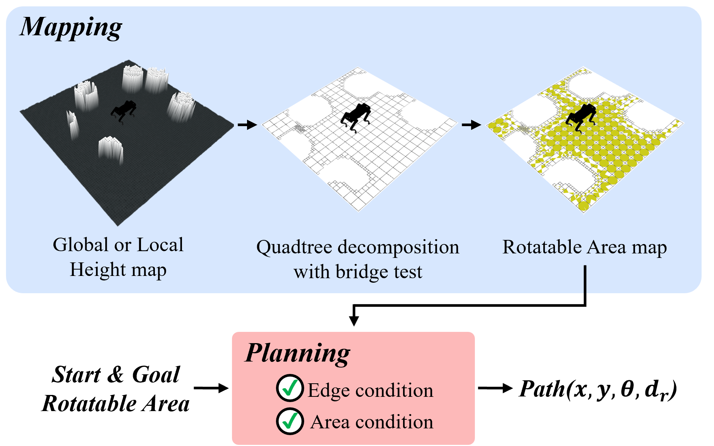

Method
Rotatable Area
The Rotatable Area (RoA), denoted by $R$, is defined as the continuous range of
yaw heading angles within which the robot can rotate at position $(x, y)$ without colliding with obstacles.
$$
R = (x, y, \psi_s, \psi_e)^T \tag{1}
$$
The parameters $\psi_s, \psi_e \in [0, 2\pi]$ denote the start and end of the RoA,
and all parameters are referenced to the world frame.
If the robot’s heading angle is between $\psi_s$ and $\psi_e$ at $(x, y)$,
the robot remains collision-free.
Within the range corresponding to RoA, the robot can rotate freely.
Three types of rotatable area. (a) Fully-RoA, $R_F$, (b) Non-RoA, $R_N$, (c) Partially-RoA, $R_{P,i}$
Local Motion between Rotatable Areas
Our approach regards local motion as a relationship between
two RoAs, $R_1 \rightarrow R_2$. Local motion consists of 1) performing
rotation at $R_1$ from the initial heading angle $\theta_1$ to the target
heading angle $\theta_2$, and 2) then translation to the target position
of $R_2$. The feasiblility of local motion is determined by area condition and edge condition.
If local motion is feasible, a robot can safely traverse between two RoAs without collision.

Area condition

Edge condition
Framework
Based on the concept of RoA, we develop a path planning
framework called RoA-Planner for obstacle-dense spaces. This
framework utilizes a quadtree structure to efficiently represent
planning space as a set of RoAs. By treating each RoA as
a node and local motions between adjacent RoAs as edges,
we design a modified A* algorithm tailored to RoA-based
path planning.
